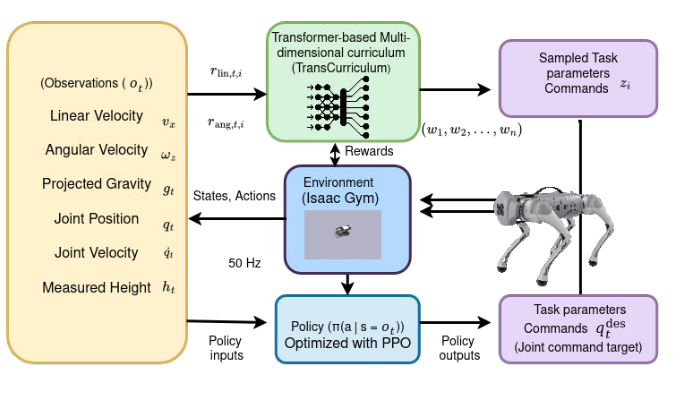
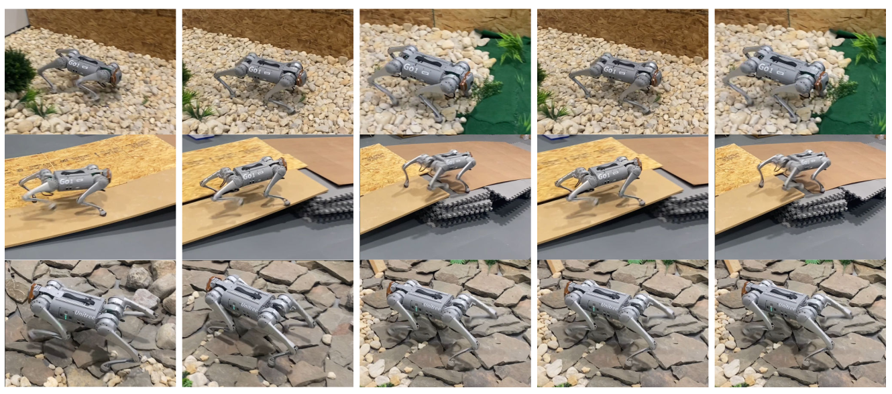

TransCurriculum is a transformer-based, multidimensional curriculum-learning approach for agile quadrupedal locomotion. It adapts task sampling across velocity commands, terrain difficulty, and domain-randomization parameters using locally retrieved training history. We evaluate the approach on the Unitree Go1 in Isaac Gym and through zero-shot hardware deployment.
TransCurriculum uses a transformer-based teacher to model context–outcome history and adaptively sample task parameters across velocity commands, terrain difficulty, and domain randomization. The resulting curriculum trains a PPO locomotion policy for fast and stable sim-to-real deployment.

We deploy the learned policy zero-shot on the Unitree Go1 across rigid, deformable, inclined, and irregular terrain. The full multidimensional curriculum reaches 4.1 ± 0.05 m/s on hardware while improving stability and reducing sim-to-real transfer loss from 27% to 18%.

@inproceedings{mishra2026transcurriculum,
title = {TransCurriculum: Multi-Dimensional Curriculum Learning for Fast and Stable Locomotion},
author = {Mishra, Prakhar and Raj, Amir Hossain and Xiao, Xuesu and Manocha, Dinesh},
booktitle = {IEEE/RSJ International Conference on Intelligent Robots and Systems (IROS)},
year = {2026}
}